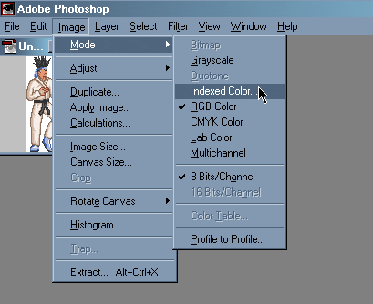
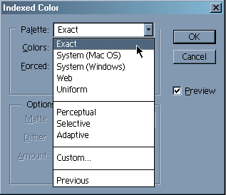
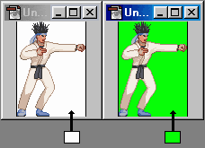
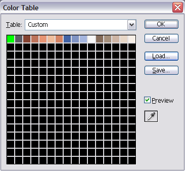
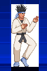
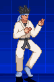
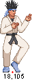
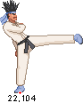
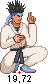
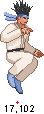

M.U.G.E.N, Elecbyte (c)1999-2009
Updated 17 September 2009
If you want to make a character for M.U.G.E.N, you'll need a good understanding of how every component of a character works. Because jumping straight into the technical documentation can be confusing, we've written a tutorial to help you get started. As you gain more understanding, be sure to refer to the docs often. You may stumble or get stuck several times as you make your first character, but like anything else, once you know the basics it becomes easier and faster to make progress.
In this tutorial you will learn how to make a palette for your character, and how put together your character's sprites. Also, you'll see how to make a simple animation action. In Part 2 of the tutorial, you'll see how to define bounding boxes for your animations, and in Part 3 and 4 we'll define a simple attack. For this tutorial, you'll need an image editing program such as GIMP, PhotoShop, or PaintShop Pro.
We'll assume you have at least basic knowledge of text editors, graphics editing, game concepts, and how to navigate at a command prompt. If you're not familiar with all of these, we recommend you do some reading up in beginner books or websites. If you have some background in programming languages, you may find it a lot easier to understand our docs. All right, now let's begin.
All the sprites belonging to a character need to be 256-color PNG files. Every sprite should have the same 256-color palette in order for them to be displayed correctly in-game. If you are experienced with Photoshop, the following part will be simple. We will assume you are starting with a true-color image (called RGB in Photoshop).
When converting sprites to 256 colors (also known as Indexed Color), most paint programs will make the palette however which way they like, and they'll do it differently for each sprite. Here we'll cover how to make a standard palette, and how to apply it to each sprite..
With Photoshop, go to Image->Mode->Indexed Color.
A window will pop up. In this window, set the palette to Exact. If you're using Photoshop 5 or higher, don't click on OK yet. For earlier versions of Photoshop, click OK, then convert to RGB (Image->Mode->RGB Color), then click on Image->Mode->Indexed Color again.
Now, select Custom in the palette roll-down list to bring up the Color Table window. The next step is to make sure the background color of your sprite has a color index of 0 (we'll call this "color 0"). In M.U.G.E.N, color 0 is the masking color. This means that all the parts of a sprite that are color 0 will not be drawn.
|  |
| Color index 0 should always be the background color. The actual color (not the index value) is up to you. |
In Photoshop's color table editor, set the top left color (that's color index 0 in Photoshop) to be the background color of the sprite. You will want to make sure that color 0 is a unique color in your palette, otherwise Photoshop will not set the color indices correctly. To do this, you can take the old color 0 color and put it where the bg color used to be (swap the two colors essentially).
Note: If you have used versions of M.U.G.E.N prior to 1.0, the preferred file format used to be PCX instead of PNG. In Photoshop, PCX files have the bottom right color as index 0. With PNG files, it is the top left color.
Example of a correct palette with background color as color 0 (green in the top left corder).
|  |  |
| Result of using incorrect palette. | Result of using correct palette. |
Click on the Save button to save this palette (we will call it player.act for the purpose of this tutorial). Now click OK to apply the palette to this image, and the save the file as a PNG file.
The next step is to convert all your other images to this palette that you just created (player.act). You can use the following method:
Palette design is very important early on when making your sprites. Although M.U.G.E.N lets you use up to 255 colors for each sprite, a character with a well-designed palette does not necessarily have to use all the available colors indices. Working with a limited number of colors not only decreases the size of the PNG files, but also makes it easier to create alternate palettes (different color schemes) later on. Pixel sprite art done by hand is easier with a small set of colors (16 to 32), but can become tedious when you have a large palette to work with. On the other hand, pre-rendered sprites may look better with a larger range of colors, at the cost of little extra work. Keep these points in mind when designing your character's palette.
Go to the chars/ directory and make a new directory for your
character. Let's call this character "Player", for an example
(replace "player" with whatever you want to call your character). In
this case, make a directory called chars/player.
You'll need to have these in the chars/player directory:
player.air
player.cmd
player.cns
player.def
player.sff
player.sndYou can make them all from scratch... Or, you can start by using
our example character Kung Fu Man (KFM). KFM's character directory
is located in chars/kfm/, and his work files are in work/kfm/.
The first thing to do is to copy over and rename the files needed for your character. Assuming your player's directory name is "player", these are the files you should copy:
chars/kfm/kfm.air -> chars/player/player.air
chars/kfm/kfm.cns -> chars/player/player.cns
chars/kfm/kfm.cmd -> chars/player/player.cmd
chars/kfm/kfm.def -> chars/player/player.def
|
Now let's make player.sff, the character's sprite file. It will contain all the graphics used by your character. The sprite file is called an SFF, and the tool that generates it is called sprmake2 (short for Sprite Maker 2 -- it is a newer version of a tool used prior to M.U.G.E.N 1.0).
We'll concentrate on just making standing animation for now. If you already have the sprites you want to use, get those ready. Let's say that the standing animations you want to use are named stand00.png - stand03.png and are in the work/player/ directory. Now, make a text file inside work/player/ and call that file player-sff.def. Here's the start of the text file you would use (comment lines begin with a semicolon).
|
The group number and image number you enter for each sprite is used to access it in the .air (animation) file. It's just a pair of numbers you will associate with the sprite. For example, instead of referring to stand02.pcx, you will refer to 0,2.
Group number 0 is used for standing frames. You can check the AIR docs later for recommended numbers for other animation actions. The image number just specifies which image it is within a particular group number. You have to get your own X and Y axis from your sprite. For standing frames, it is usually at the very bottom in the middle of the sprite. For jumping sprites, the axis is usually in the where the character's feet would be if they were standing. That usually is in the center below the sprite. You can check KFM's sprites by running M.U.G.E.N and pressing Ctrl-C while playing. This will bring up the characters' bounding boxes and axes. Here are some examples of axis positions.
|  |  |  |  |
|
The positioning of your axes is very important. If they are slightly off between sprites, you will notice your sprites "jittering" around. If you make bigger errors, your sprites can end up appearing in completely wrong places.
Once you have player.txt ready, go to the directory where you have mugen.exe and sprmake2.exe, etc and make player.sff by typing at the command prompt:
sprmake2 work\player\player-sff.def
Okay, now that you have the standing sprites in player.sff, it's time to animate your character. To make the standing animation, you have to create an action for it (an action is a block of text that describes one sequence of sprites to display). Open up player.air in a text editor, and let's get ready to add a standing animation action. If your player.air is a copy of kfm.air, you can simply edit the appropriate action group (action 0 for standing animation).
It's time to make player.air. If you've read the AIR docs, you'll know the format for .air is:
Group number, image number, X offset, Y offset, game-ticks, [options]
|
Now, save this file and you're ready to see how your character looks!
If all the files are in the right place, you can directly load your character with M.U.G.E.N by typing at the command prompt:
mugen player player
This is a shortcut for versus mode. For now, don't worry if you see warnings at the top of the screen. Warnings are a sign that there's something wrong or missing in your character. In this case, your character might be missing required sprites or animation actions.
If you find a sprite too high up, as if it is floating above the ground, you'll have to move the axis higher up. Just remember that the axis is on ground-level when the character is on the ground. Likewise, if your character is too far forwards, move the axis right. Once you've adjusted the axes for all the sprites correctly, your character shouldn't be sliding or fidgeting around during the animation.
If you accidentally entered a sprite group+image number that doesn't exist, then nothing will be drawn. So if you see your character blinking out, you should go back and check your .air file to see if the numbers correspond to the ones in used for building your .sff.
After making the standing frames, you can proceed to walking, then jumping. Now that you know the basics of making sprites and actions, you should continue by making the required sprites from spr.html and required actions from the Reserved Action Numbers in the AIR docs. When you're done, all the warnings at the top of the screen should go away.
In part 2 of the tutorial, you'll be able to define your character's bounding boxes so they can get hit and hit other characters. Finally, we'll show you how to define some attacks in the .cns.
Next is Tutorial Part 2